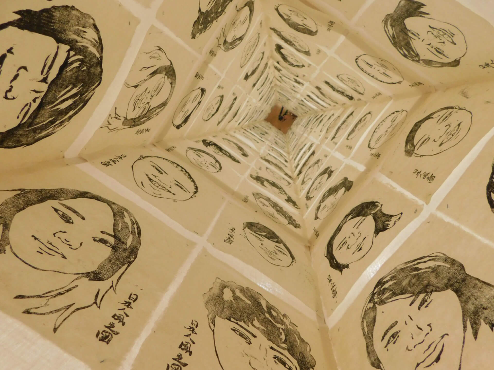
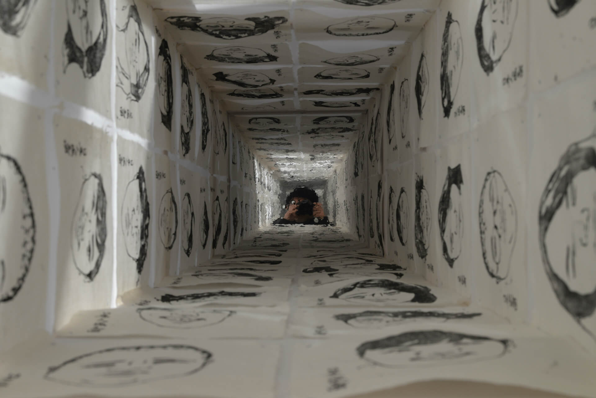
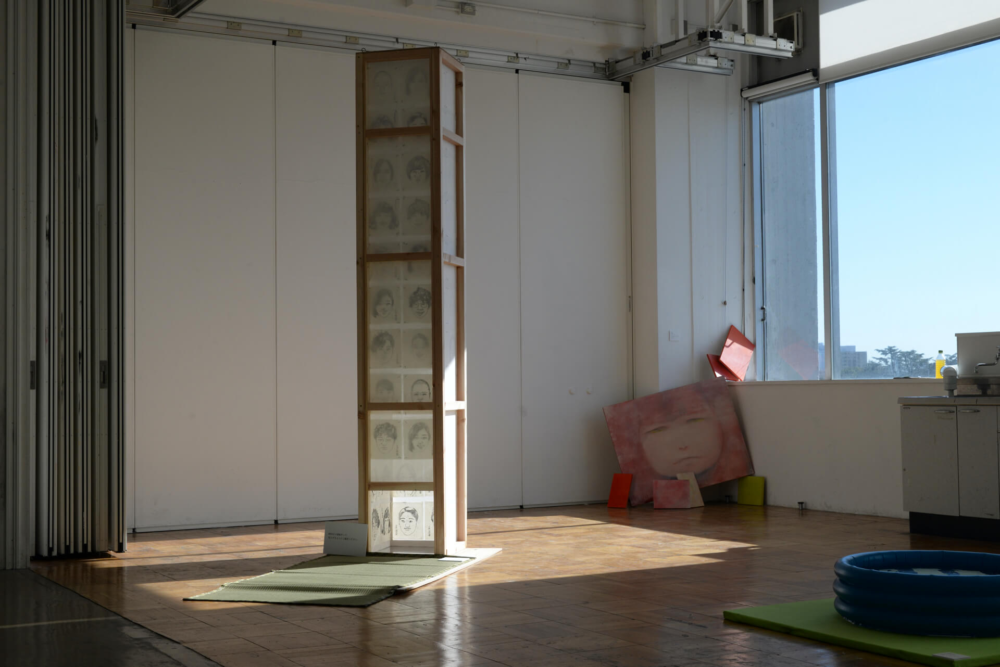
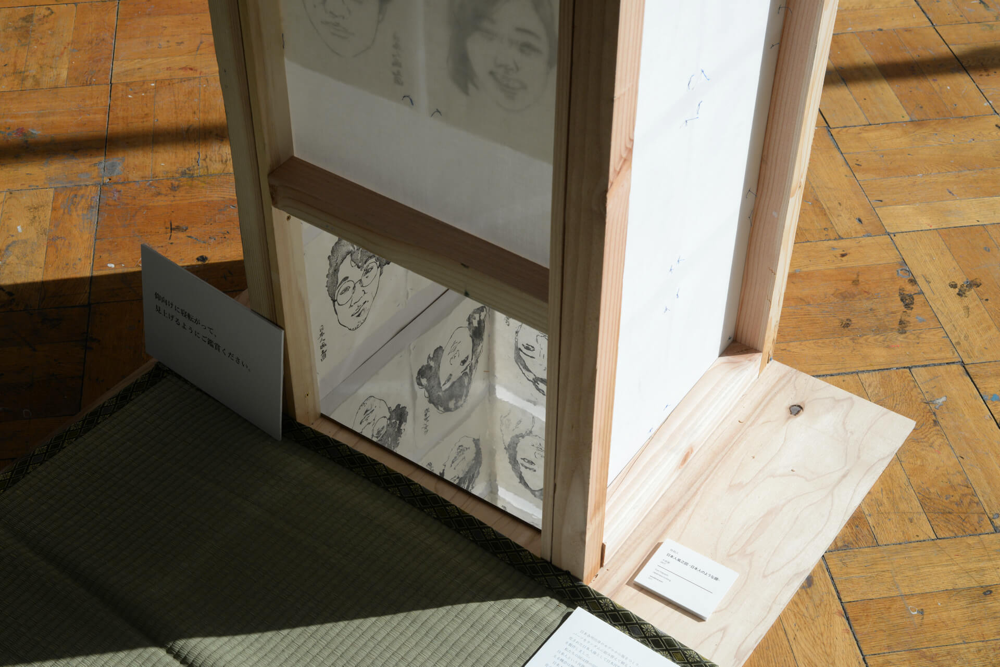
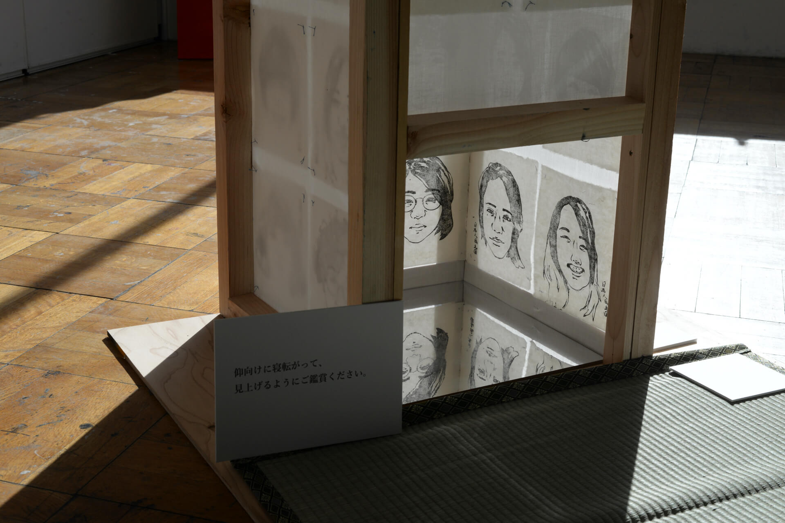
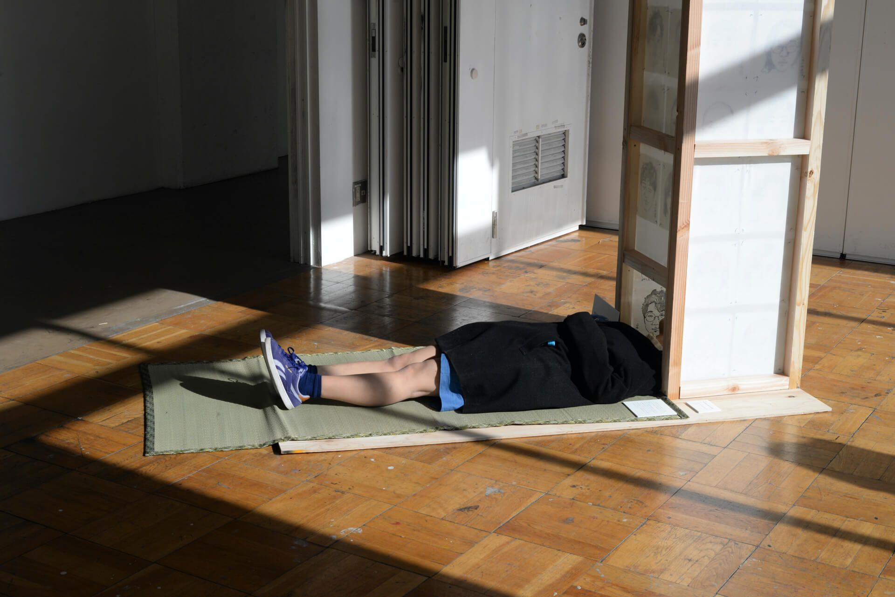
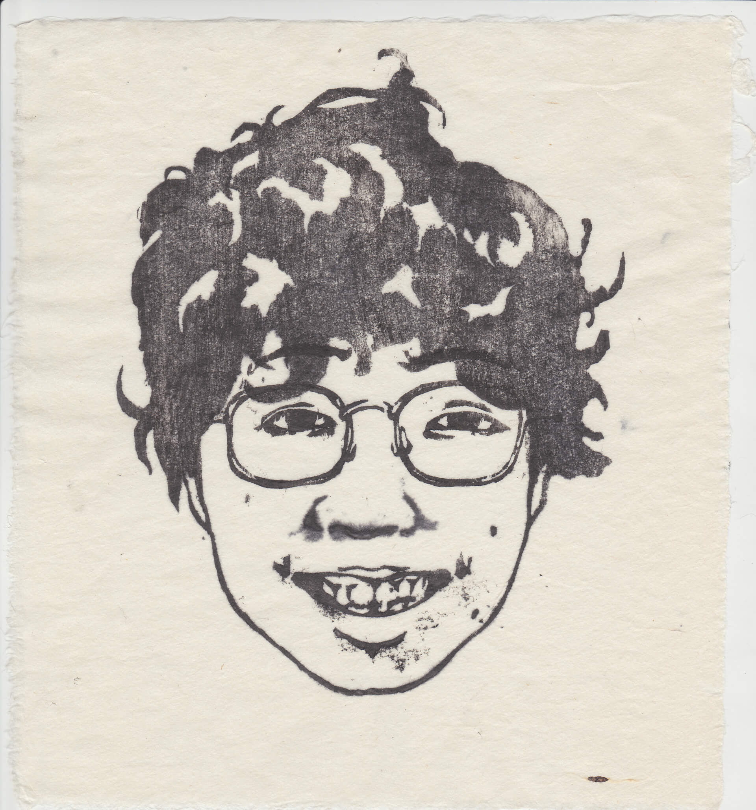
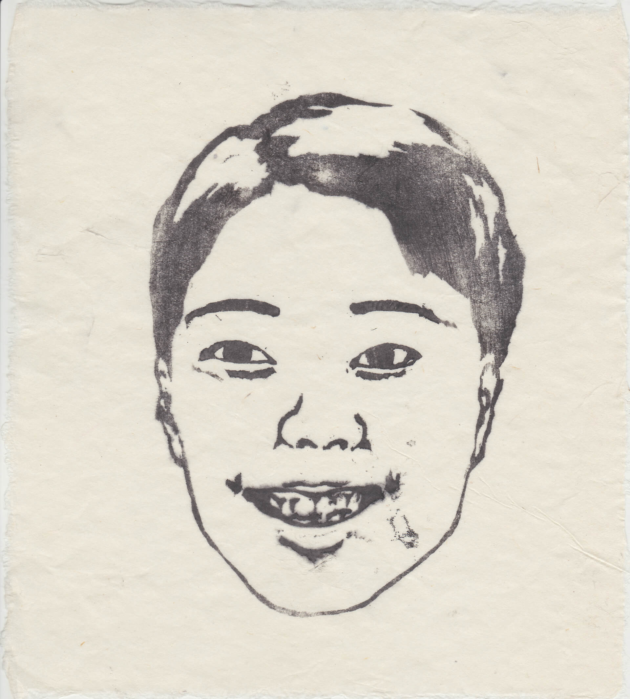
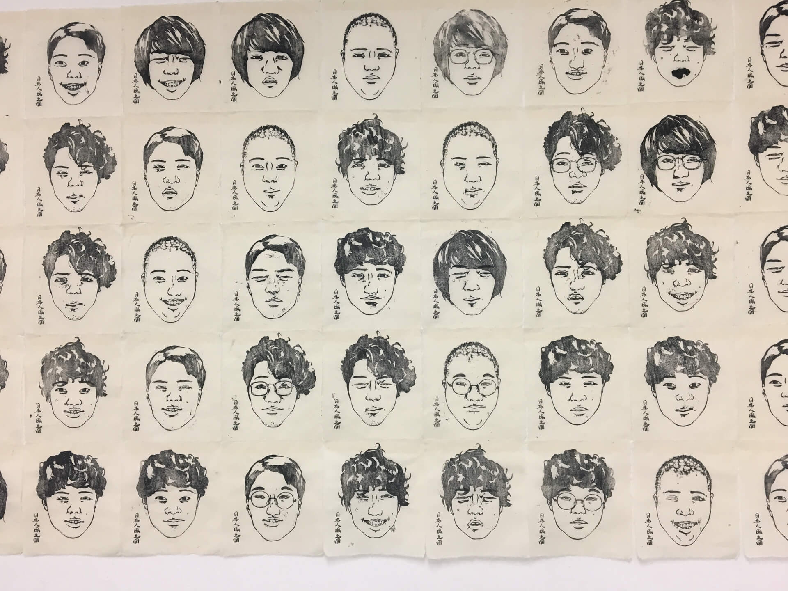

日本人風之図/Japanese like faces
Yuto Hayashi
2018
Exhibied in “LOCI”
material : wood, cloth, woodblock printing
伝統的な木版画の技法を用いて、12人の同世代の日本人モデルから、それぞれ目鼻口輪郭を分けて版を作り、それらをランダムに組み合わせてすることで、それぞれのモデルを平均化したモンタージュ郡を制作しました。展示においては木と薄い布を用いてオブジェクトを作り、覗き込むと上下に貼られた鏡の回廊の中で、無限に続く日本人像と自身の顔に対面するインスタレーションを構築しています。
2017年の10月ごろはミャンマーのロヒンギャ問題が報道されていた頃で、グローバリゼーションとナショナリズムについて興味を持った中での、日本人の民族性を問い直す挑戦でした。
-
I made a lot of montages of general image of Japanese faces with using a traditioinal woodcut print
technique. At first I made woodcuts from 12 Japanese models of close generation to me, then I divided
their face parts to eyes, nose, mouth and outline, and print with them randomly. For the exhibition, I
made an object which reminiscent of a shoji from wood and a thin cloth. When one gets own head into the
object and look up, he or she sees a corridor sandwiched with 2 mirrors is continueing with infinite
number of Japanese montages and his or her own face in front.
Through this work, I tried to comprehend the ethnicity of Japanese.